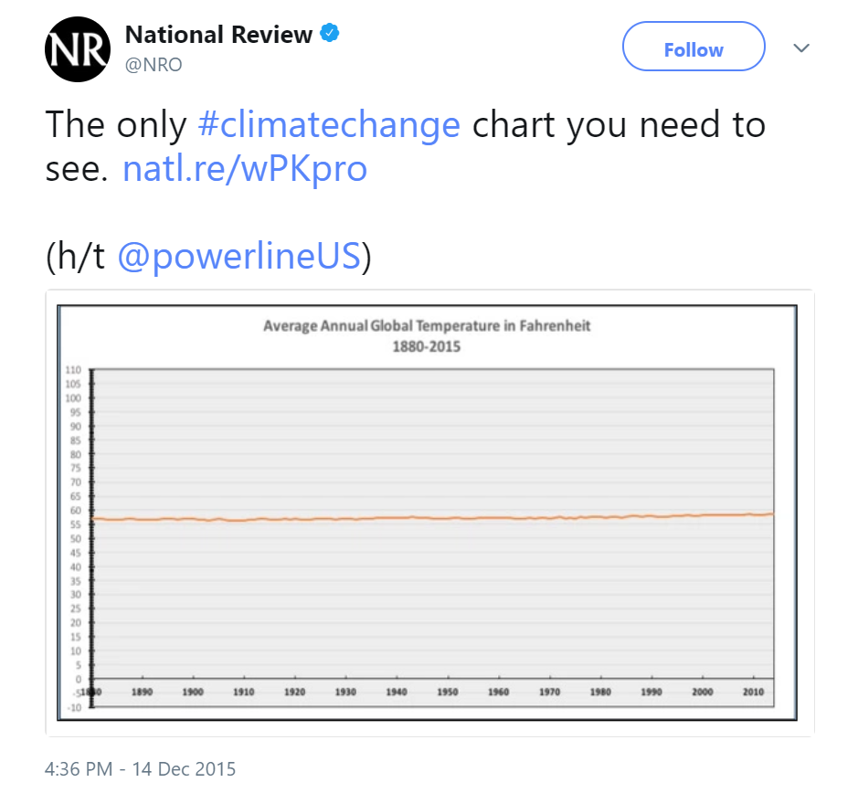
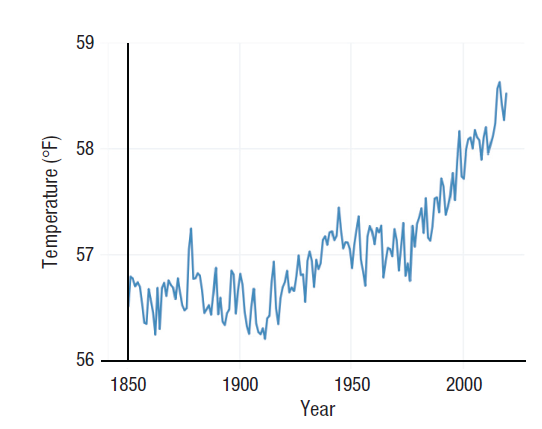
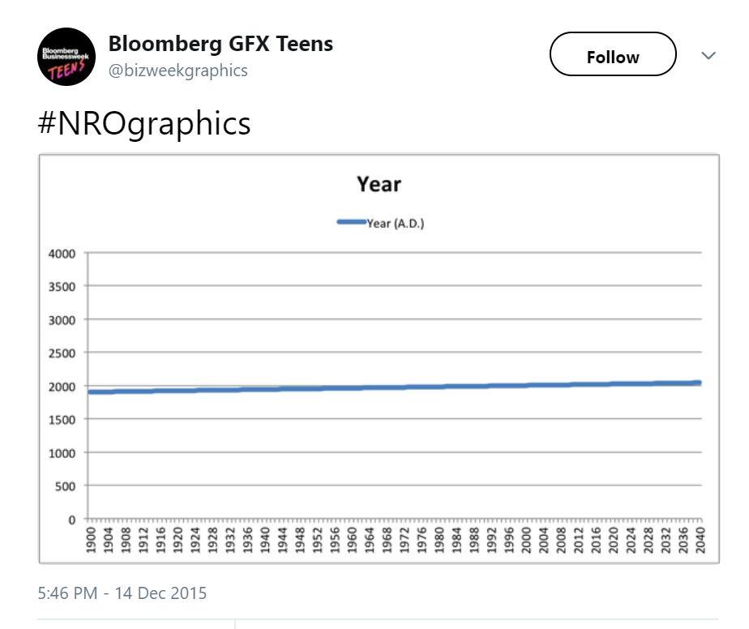
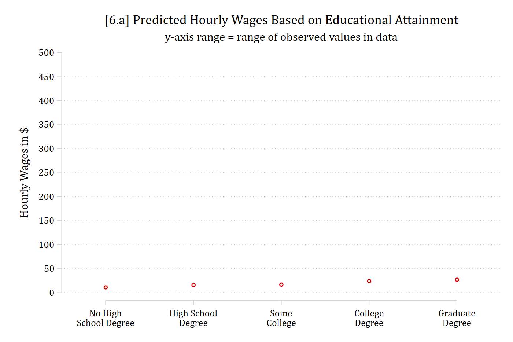
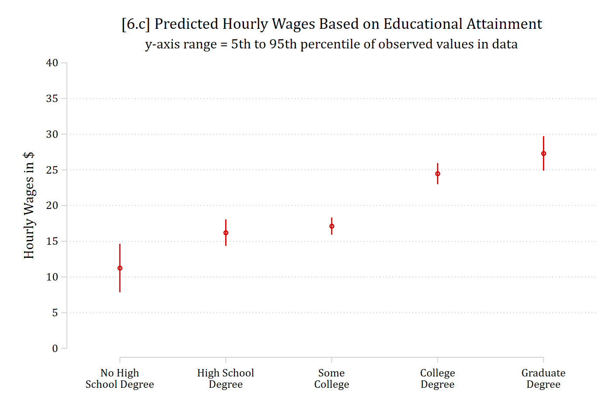
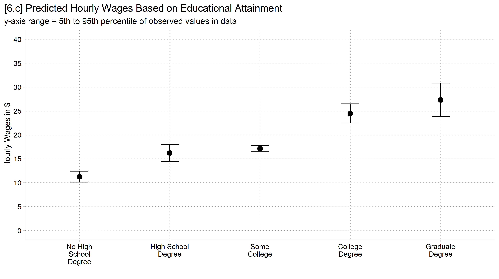

“Charts should convey information and make a point. We make charts to illustrate ideas that have context beyond their x- and y-axes. Forcing the y-axis to start at zero can do just as much to obscure and confuse the point as the opposite.” (Yanofsky 2015 in Quartz)
Graphs are tools for showing the data
The data should always be accurately and honestly represented
Including zero points on axes does not guarantee accuracy—in fact, it may be less accurate and honest than excluding it!



Why the y-axis doesn’t have to cover the range of the data
“… there is a lot to be said in favor of showing the data over the range we observe it, rather than forcing every scale to encompass its lowest and highest theoretical value. Many otherwise informative visualizations would become useless if it was mandatory to include a zero point on the x- or y-axis.” (Healy 2018)
The most popular (sometimes misguided) rule is to always include zero on your axis
The second most popular (sometimes misguided) rule is to have your axis cover the entire observed range in your data
But consider the following examples predicting hourly wages based on educational attainment
Which axis range do you think is most “truthful” to represent the story in the data?
Source | SS df MS Number of obs = 3,575
-------------+---------------------------------- F(5, 3570) = 529.63
Model | 1455712.96 5 291142.591 Prob > F = 0.0000
Residual | 1962450.8 3,570 549.706106 R-squared = 0.4259
-------------+---------------------------------- Adj R-squared = 0.4251
Total | 3418163.75 3,575 956.129721 Root MSE = 23.446
-------------------------------------------------------------------------------
wages | Coefficient Std. err. t P>|t| [95% conf. interval]
--------------+----------------------------------------------------------------
educ |
No High Sc.. | 11.248 1.733 6.490 0.000 7.850 14.646
High Schoo.. | 16.204 0.945 17.140 0.000 14.351 18.058
Some College | 17.123 0.614 27.877 0.000 15.919 18.327
College De.. | 24.474 0.758 32.292 0.000 22.988 25.960
Graduate D.. | 27.307 1.231 22.190 0.000 24.894 29.719
-------------------------------------------------------------------------------
// 6.a - y-axis covers the observed range in datacoefplot, noci vertical ylab(0(50)500) ///title("[6.a] Predicted Hourly Wages Based on Educational Attainment") ///subtitle("y-axis range = range of observed values in data") ///ytitle("Hourly Wages in $") /// xlab(1 `""No High""School Degree""' 2 `""High School""Degree""' /// 3 `""Some""College""' 4 `""College""Degree""' 5 `""Graduate""Degree""')

library(foreign) # load Stata datasetslibrary(ggplot2) # main graphics packagelibrary(dplyr) # data manipulation toolslibrary(cleanplots) # Mize's graphics scheme## Use cleanplots colors, markers, lines, and theme for all graphs ##cleanplots_defaults()theme_update(plot.title.position ="plot") # titles start at left edge of graph# Add Health Wave 4 Dataah4 <-droplevels(read.dta("https://tdmize.github.io/data/data/addhealth4.dta"))# Predicted wages by educational attainment (employed young adults)ah4_emp <-filter(ah4, employed =="Yes", !is.na(educ))quantile(ah4_emp$wages, c(.05, .10, .90, .95))
# 6.a - y-axis covers the observed range in dataggplot(ah4_emp, aes(x = educ, y = wages)) +stat_summary(fun = mean, geom ="point", size =3) +labs(x ="", y ="Hourly Wages in $",title ="[6.a] Predicted Hourly Wages Based on Educational Attainment",subtitle ="y-axis range = range of observed values in data") +scale_x_discrete(labels = scales::label_wrap(12)) +scale_y_continuous(breaks =seq(0, 500, 50), limits =c(0, 500))
// 6.c - y-axis covers the 5th to 95th percentile of datacoefplot, vertical ylab(0(5)40) ///title("[6.c] Predicted Hourly Wages Based on Educational Attainment") ///subtitle("y-axis range = 5th to 95th percentile of observed values in data") ///ytitle("Hourly Wages in $") /// xlab(1 `""No High""School Degree""' 2 `""High School""Degree""' /// 3 `""Some""College""' 4 `""College""Degree""' 5 `""Graduate""Degree""')

# 6.c - y-axis covers the 5th to 95th percentile of dataggplot(ah4_emp, aes(x = educ, y = wages)) +stat_summary(fun = mean, geom ="point", size =3) +stat_summary(fun.data = mean_cl_normal, geom ="errorbar", width = .2) +labs(x ="", y ="Hourly Wages in $",title ="[6.c] Predicted Hourly Wages Based on Educational Attainment",subtitle ="y-axis range = 5th to 95th percentile of observed values in data") +scale_x_discrete(labels = scales::label_wrap(12)) +scale_y_continuous(breaks =seq(0, 40, 5)) +coord_cartesian(ylim =c(0, 40))

Guidelines for choosing axis values
“There is emerging research that suggests that perhaps starting bar charts at something other than zero does not bias our perception… participants were better able to assess the sensitivity of the results (e.g., no effect, small effect, medium effect, or big effect) and more accurate (e.g., the size of the effect) when the vertical axis was set at a range more consistent with variation of the data.” (Schwabish 2021)
My personal rule: the y-axis (and usually the x-axis as well) should cover at least the 10th to the 90th percentile of observed values
5th to the 95th percentile is sometimes more appropriate
Often, what we are trying to communicate is an effect or a difference across groups—not necessarily the exact value of the statistic (tables better for this)
All of these rules are mostly based on the logic of exploratory visualization of all sample values
Unclear that these rules work well when applied to model results
Sometimes, even more restrictive ranges better represent the data
Consider these “starting rules:” a good default to choose first—but that should be updated if a different choice better represents the data